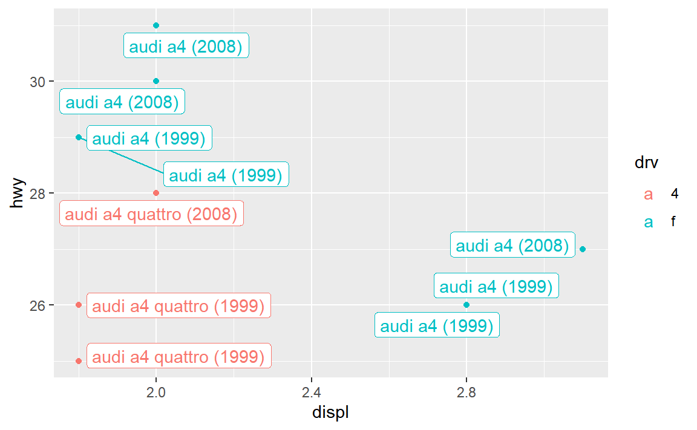
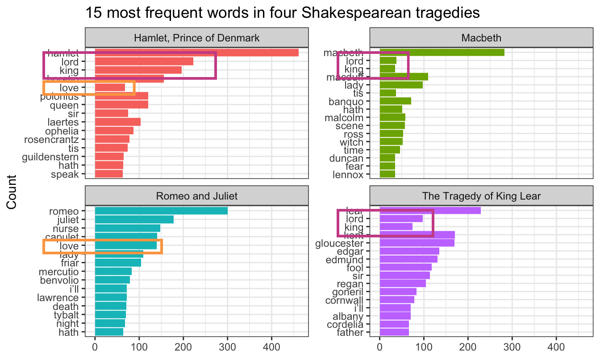
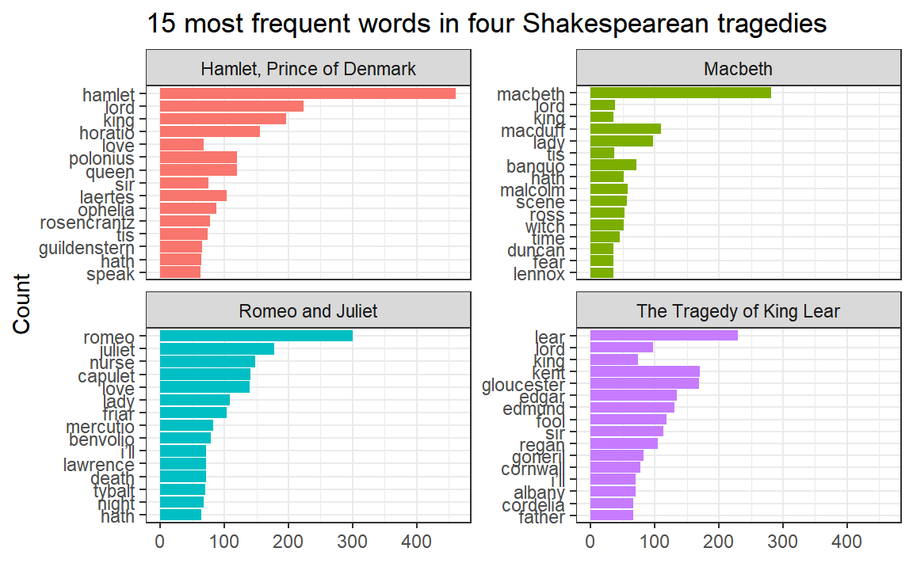
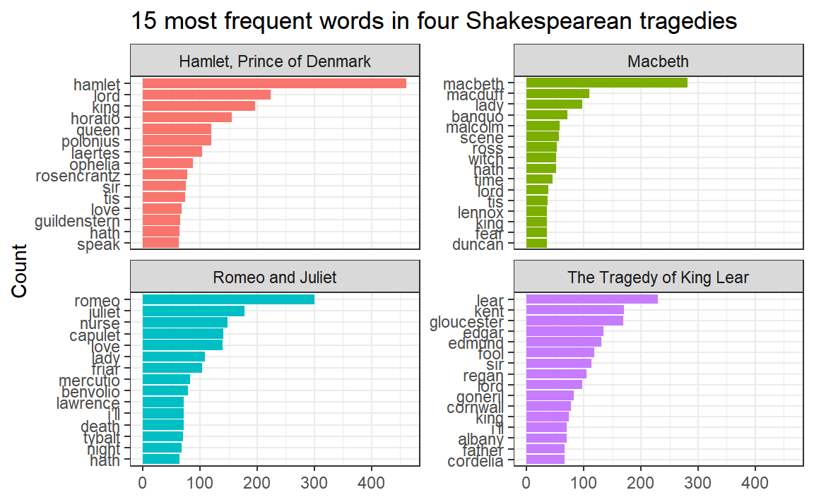

You learned about the {ggrepel} package in session 9, with its geom_text_repel() and geom_label_repel() functions that make sure none of your labels overlap:
library(tidyverse)library(sf)library(ggrepel)small_mpg <- mpg %>%# Only use the first 10 rowsslice(1:10) %>%# Make a label columnmutate(fancy_label =paste0(manufacturer, " ", model, " (", year, ")"))ggplot(small_mpg, aes(x = displ, y = hwy, color = drv)) +geom_point() +geom_label_repel(aes(label = fancy_label), seed =1234)

In session 12, you learned about geom_sf_text() and geom_sf_label() for adding text and labels to maps. But what if your map labels overlap, like this?
# Download cb_2022_us_county_5m.zip under "County" from# https://www.census.gov/geographies/mapping-files/time-series/geo/cartographic-boundary.htmlga_counties <-read_sf("data/cb_2022_us_county_5m/cb_2022_us_county_5m.shp") %>%filter(STATEFP ==13)
Unfortunately there’s no such thing as geom_sf_label_repel(). BUT there’s still a way to use geom_label_repel() and geom_text_repel() with maps, with a couple little tweaks:
You have to map the geometry column in the data to the geometry aesthetic in geom_text/label_repel()
You have to tell geom_text/label_repel() to use the “sf_coordinates” stat so that it uses the latitude and longitude coordinates for x/y
I tried to make a map and countries are missing—why?
Many of you were brave and made a map of refugee counts for mini project 2. That’s fantastic!
If you did, you likely ran into an issue with plotting the countries and getting an incomplete map. Here’s an example with our beloved gapminder data.
library(countrycode) # For dealing with country names, abbreviations, and codeslibrary(gapminder) # Global health and wealth# Add an ISO country code column to gapminder for joininggapminder_clean <- gapminder %>%mutate(ISO_A3 =countrycode(country, "country.name", "iso3c"))# Load the world map data from exercise 12# Download "Admin 0 – Countries" from# https://www.naturalearthdata.com/downloads/110m-cultural-vectors/world_map <-read_sf("data/ne_110m_admin_0_countries/ne_110m_admin_0_countries.shp") %>%filter(ISO_A3 !="ATA") %>%# Bye penguinsmutate(ISO3 = ADM0_A3) # Use ADM0_A3 as the main country code column
Let’s take just 2007 from gapminder and map life expectancy. To do this we’ll need to combine or join the two datasets. One logical way to do this would be to take gapminder, join the world map data to it, and then plot it:
gapminder_with_map <- gapminder_clean %>%filter(year ==2007) %>%left_join(world_map, by =join_by(ISO3))ggplot() +geom_sf(data = gapminder_with_map, aes(fill = lifeExp))## Error in `geom_sf()`:## ! Problem while computing stat.## ℹ Error occurred in the 1st layer.## Caused by error in `compute_layer()`:## ! `stat_sf()` requires the following missing aesthetics: geometry
oh no there’s an error! When we joined the map data, the special attributes of the geometry column in world_map got lost. The column is still there, but it won’t automatically plot with geom_sf(). We can fix that by specifying that the column named “geometry” does indeed contain all the geographic data with st_set_geometry():
gapminder_with_map <- gapminder_clean %>%filter(year ==2007) %>%left_join(world_map, by =join_by(ISO3)) %>%# Fix the geometry columnst_set_geometry("geometry")ggplot() +geom_sf(data = gapminder_with_map, aes(fill = lifeExp)) +theme_void()
We have a… map? It’s missing a bunch of countries (Russia is the most glaringly obvious hole!). That’s because those countries aren’t in gapminder, so their corresponding maps didn’t come over when using left_join(). We can confirm by counting rows. The original map data has maps for 176 countries. Gapminder has 142 countries in 2007. The combined gapminder_with_map dataset only has 142 rows—we’re not plotting 34 countries, since they’re not in gapminder.
The better way to fix this is to join the two datasets in a different order—start with the full map data and then add gapminder to it. This maintains the specialness of the geometry column and keeps all the original rows in world_map. For countries that are in the map data but not in gapminder, they’ll still be in the final map_with_gapminder data, but they’ll have NA for life expectancy:
map_with_gapminder <- world_map %>%left_join(filter(gapminder_clean, year ==2007), by =join_by(ISO3))ggplot() +geom_sf(data = map_with_gapminder, aes(fill = lifeExp)) +theme_void() +# Make the countries with missing data a different colorscale_fill_gradient(na.value ="grey90")
What if we want to facet though? This is just one year—what if we want to show panels for multiple years? This gets a little tricky. The gapminder data has rows for different country/year combinations (Afghanistan 1952, Afghanistan 1957, Albania 1952, etc.), but the world map data only has rows for countries. If we join the gapminder data to the world map data and gapminder has multiple rows for years, there’s no clear place for the gapminder rows to connect with the world map rows. R will try to make it work and repeat world_map rows for each of the repeated years, but it can be unpredictable.
The best approach I’ve found for doing this is to create what I call a “skeleton” data frame that has all the possible combinations of (1) unique countries in the map data and (2) unique years in gapminder (or the refugee data if you’re using that). The expand_grid() function does this automatically. Like, look what happens if we tell it to make rows for every combination of A, B, C and 1, 2, 3—we get A1, A2, A3, B1, B2, and so on:
expand_grid(column_1 =c("A", "B", "C"),column_2 =c(1, 2, 3))## # A tibble: 9 × 2## column_1 column_2## <chr> <dbl>## 1 A 1## 2 A 2## 3 A 3## 4 B 1## 5 B 2## 6 B 3## 7 C 1## 8 C 2## 9 C 3
We’ll make a similar skeleton with all the countries in the map and all the years we care about in gapminder. We’ll just show two panels—1952 and 2007—so we’ll make a little filtered dataset first. Then we’ll use expand_grid() to make a dataset with all those combinations: Afghanistan 1952, Afghanistan 2007, Albania 1952, Albania 2007, and so on:
gapminder_smaller <- gapminder_clean %>%filter(year %in%c(1952, 2007))skeleton <-expand_grid(ISO3 =unique(world_map$ISO3),year =unique(gapminder_smaller$year))skeleton## # A tibble: 352 × 2## ISO3 year## <chr> <int>## 1 FJI 1952## 2 FJI 2007## 3 TZA 1952## 4 TZA 2007## 5 SAH 1952## 6 SAH 2007## 7 CAN 1952## 8 CAN 2007## 9 USA 1952## 10 USA 2007## # ℹ 342 more rows
Neat, that works. There’s Fiji in 1952 and 2007, Tanzania in 1952 and 2007, and so on. Those are all the possible countries in world_map with all the possible years in gapminder_smaller.
Next we can join in the gapminder data for each country and year, and join in the map data for each country. Notice how it has the same number of rows as skeleton (352). If a country doesn’t have gapminder data (like Fiji here), it gets an NA for lifeExp and pop and gdpPercap. But it still has map data for both 1952 and 2007, so it’ll show up in a plot.
full_gapminder_map <- skeleton %>%left_join(gapminder_smaller, by =join_by(ISO3, year)) %>%left_join(world_map, by =join_by(ISO3)) %>%# The geometry column lost its magic powers after joining, so add it backst_set_geometry("geometry")full_gapminder_map## Simple feature collection with 352 features and 175 fields## Geometry type: MULTIPOLYGON## Dimension: XY## Bounding box: xmin: -180 ymin: -55.61183 xmax: 180 ymax: 83.64513## Geodetic CRS: WGS 84## # A tibble: 352 × 176## ISO3 year country continent lifeExp pop gdpPercap featurecla scalerank## <chr> <int> <fct> <fct> <dbl> <int> <dbl> <chr> <int>## 1 FJI 1952 <NA> <NA> NA NA NA Admin-0 c… 1## 2 FJI 2007 <NA> <NA> NA NA NA Admin-0 c… 1## 3 TZA 1952 Tanzania Africa 41.2 8.32e6 717. Admin-0 c… 1## 4 TZA 2007 Tanzania Africa 52.5 3.81e7 1107. Admin-0 c… 1## 5 SAH 1952 <NA> <NA> NA NA NA Admin-0 c… 1## 6 SAH 2007 <NA> <NA> NA NA NA Admin-0 c… 1## 7 CAN 1952 Canada Americas 68.8 1.48e7 11367. Admin-0 c… 1## 8 CAN 2007 Canada Americas 80.7 3.34e7 36319. Admin-0 c… 1## 9 USA 1952 United … Americas 68.4 1.58e8 13990. Admin-0 c… 1## 10 USA 2007 United … Americas 78.2 3.01e8 42952. Admin-0 c… 1## # ℹ 342 more rows## # ℹ 167 more variables: LABELRANK <int>, SOVEREIGNT <chr>, SOV_A3 <chr>,## # ADM0_DIF <int>, LEVEL <int>, TYPE <chr>, TLC <chr>, ADMIN <chr>,## # ADM0_A3 <chr>, GEOU_DIF <int>, GEOUNIT <chr>, GU_A3 <chr>, SU_DIF <int>,## # SUBUNIT <chr>, SU_A3 <chr>, BRK_DIFF <int>, NAME <chr>, NAME_LONG <chr>,## # BRK_A3 <chr>, BRK_NAME <chr>, BRK_GROUP <chr>, ABBREV <chr>, POSTAL <chr>,## # FORMAL_EN <chr>, FORMAL_FR <chr>, NAME_CIAWF <chr>, NOTE_ADM0 <chr>, …
Now we can plot it and we’ll have consistent countries in each panel:
Some of the words in my word frequency/tf-idf plot were out of order—how can I fix that?
In the example for week 13, I showed the 15 most frequent words in Hamlet, Macbeth, Romeo and Juliet, and King Lear, faceted by play. Only Romeo and Juliet, though, has the words in the correct order. The other plays have strange ordering. Note how “lord” and “king” are weirdly misplaced in Macbeth and Hamlet and how “love” is weirdly misplaced in Hamlet:

Words in the wrong order across panels
The word “lord” is the second most common word in Hamlet, so R thinks it is the second most common word across all the plays. It doesn’t know that there’s a difference between “lord” in Hamlet and “lord” in Macbeth. As a result, any common words that are shared across the plays will appear out of order.
This is fixable though! See this blog post by Julia Silge, one of the authors of {tidytext}. Basically, you need to use reorder_within() to sort the words correctly inside each play, then add scale_y_reordered() to make them display correctly.
Here’s what that looks like with the Shakespeare words.
library(tidyverse)library(gutenbergr) # For getting books from Project Gutenberglibrary(tidytext) # For working with text
tragedies_raw <-gutenberg_download(c(1524, # Hamlet1532, # King Lear1533, # Macbeth1513# Romeo and Juliet ),meta_fields ="title")
# Clean up the tragedies texttop_words_tragedies <- tragedies_raw %>%drop_na(text) %>%unnest_tokens(word, text) %>%# Remove stop wordsanti_join(stop_words) %>%# Get rid of old timey words and stage directionsfilter(!(word %in%c("thou", "thy", "haue", "thee", "thine", "enter", "exeunt", "exit"))) %>%# Count all the words in each playcount(title, word, sort =TRUE) %>%# Keep top 15 in each playgroup_by(title) %>%top_n(15) %>%ungroup()top_words_tragedies## # A tibble: 62 × 3## title word n## <chr> <chr> <int>## 1 Hamlet, Prince of Denmark hamlet 461## 2 Romeo and Juliet romeo 300## 3 Macbeth macbeth 282## 4 The Tragedy of King Lear lear 229## 5 Hamlet, Prince of Denmark lord 223## 6 Hamlet, Prince of Denmark king 196## 7 Romeo and Juliet juliet 178## 8 The Tragedy of King Lear kent 170## 9 The Tragedy of King Lear gloucester 169## 10 Hamlet, Prince of Denmark horatio 156## # ℹ 52 more rows
Because we used top_n(), these words are already sorted in order of frequency (with “hamlet” appearing the most at 461 times). In example 13, we locked in that order by making the word column an ordered factor, like this:
top_words_tragedies_order_wrong <- top_words_tragedies %>%# Make the words an ordered factor so they plot in ordermutate(word =fct_inorder(word)) ggplot(top_words_tragedies_order_wrong, aes(y =fct_rev(word), x = n, fill = title)) +geom_col() +guides(fill ="none") +labs(y ="Count", x =NULL, title ="15 most frequent words in four Shakespearean tragedies") +facet_wrap(vars(title), scales ="free_y") +theme_bw()

But that’s wrong!
Instead of using fct_inorder(), we need to use reorder_within() and tell it to sort the words by count within each play:
top_words_tragedies_order_right <- top_words_tragedies %>%# Make the words an ordered factor so they plot in ordermutate(word =reorder_within(word, n, title)) top_words_tragedies_order_right## # A tibble: 62 × 3## title word n## <chr> <fct> <int>## 1 Hamlet, Prince of Denmark hamlet___Hamlet, Prince of Denmark 461## 2 Romeo and Juliet romeo___Romeo and Juliet 300## 3 Macbeth macbeth___Macbeth 282## 4 The Tragedy of King Lear lear___The Tragedy of King Lear 229## 5 Hamlet, Prince of Denmark lord___Hamlet, Prince of Denmark 223## 6 Hamlet, Prince of Denmark king___Hamlet, Prince of Denmark 196## 7 Romeo and Juliet juliet___Romeo and Juliet 178## 8 The Tragedy of King Lear kent___The Tragedy of King Lear 170## 9 The Tragedy of King Lear gloucester___The Tragedy of King Lear 169## 10 Hamlet, Prince of Denmark horatio___Hamlet, Prince of Denmark 156## # ℹ 52 more rows
Notice how the word column looks a little weird now. It added the play name to the end of each word, like macbeth___Macbeth. That’s actually a creative hack for fixing the ordering. Remember that the main reason the ordering is messed up across facets is because R doesn’t know that the word “love” in Hamlet is different from the word “love” in Romeo and Juliet. By changing the words to love___Romeo and Juliet and love___Hamlet, R can now recognize the different versions of “love” and sort them correctly. Let’s plot this version:
ggplot(top_words_tragedies_order_right, aes(y = word, x = n, fill = title)) +geom_col() +guides(fill ="none") +labs(y ="Count", x =NULL, title ="15 most frequent words in four Shakespearean tragedies") +facet_wrap(vars(title), scales ="free_y") +theme_bw()
oh no.
The order is right (yay!) but the y-axis is horrible since it’s including the hacky ___play name at the end of each of the words.
To fix that, we can use scale_y_reordered(), which cleans up those word labels by removing the three underscores and any text that follows them:
ggplot(top_words_tragedies_order_right, aes(y = word, x = n, fill = title)) +geom_col() +scale_y_reordered() +guides(fill ="none") +labs(y ="Count", x =NULL, title ="15 most frequent words in four Shakespearean tragedies") +facet_wrap(vars(title), scales ="free_y") +theme_bw()

Perfect!
Cleaning up text is always specific and specialized
In the Shakespeare example, we removed common stop words like “the” and “a” with anti_join() and then manually removed some other more specific words like “thou” and “thee” and “exit”:
# Clean up the tragedies texttop_words_tragedies <- tragedies_raw %>%drop_na(text) %>%unnest_tokens(word, text) %>%# Remove stop wordsanti_join(stop_words) %>%# Get rid of old timey words and stage directionsfilter(!(word %in%c("thou", "thy", "haue", "thee", "thine", "enter", "exeunt", "exit")))
That’s because in these specific plays, those are common words that we want to ignore—they’re basically our own custom stop words. We should also probably get rid of words like “act” and “scene” too, but we didn’t here.
Many of you kept that exact code in exercise 13, removing “thou”, “thy”, “exeunt”, and those other words from your own text. But that’s not necessary or helpful. If you’re working with something like Harry Potter or Jane Austen or Ernest Hemmingway or anything more modern than Shakespeare, those words aren’t really in there. In the Shakespeare example, we removed “enter” and “exit” because those are stage directions, but in other books those are regular actual words and probably shouldn’t be removed.
There’s no one universal set of stop words that you can use—every text is unique and has its own quirks that you need to take care of.
For example, one of you looked at four books by W. E. B. Du Bois and did this to clean up the stop words:
That’s awesome. Those are all words that are specific to those four books and that were likely appearing in the frequency plot. One (or more) of the books probably mentioned lots of congressional activity, like congressional sessions, acts of congress, stuff happening in the House of Representatives, and so on. There were probably also a lot of citations, with things like “pp.” (the abbreviation for “pages”, like “pp. 125-127”) and “ibid” (the abbreviation for “see the previous citation”). That list of words is specific to those four books and should not be applied to other books—like, there’s no reason to remove those words from the Shakespeare tragedies or from Little Women or from Harry Potter because none of those mention congressional sessions or use “ibid”.
Data cleaning is always context specific.
Saving data that takes a long time to make
In these later sessions, I’ve had you do things with data from different places on the internet. In exercise 13 you grabbed books from Project Gutenberg. Some of you used osrmRoute() in exercise 12 to create a mapped route between cities. Some of you used {tidygeocoder} to geocode addresses in exercise 12. In past sessions you’ve used WDI() to download data from the World Bank.
When you knit a document, R starts with a brand new empty session without any packages or data loaded, and then it runs all your chunks to load packages, load data, and run all your other code. If you have code that grabs data from the internet, it will run every time you knit your document. Remember my suggestion to knit often? You’ll re-download the data, re-create routes, re-geocode addresses, and so on every time you keep re-knitting. This is excessive, slow, and—most especially—bad R etiquette. You don’t want to keep accessing those servers and recalculate things and redownload things you don’t need to update.
BUT at the same time, you should care about reproducibility. You want others—and future you—to be able to run your code and create the same plots and tables and get the same data. But you don’t want to do all that excessively and impolitely.
The solution is to be a little tricky with your R Markdown file. If you have code that needs to grab something from the internet, put it in a chunk that doesn’t run—use eval=FALSE in its chunk options. Then, in an invisible chunk (with include=FALSE) load the pre-downloaded data manually. I showed this in example 8 (with {WDI}) and example 11 (with {tidyquant}) and example 13 (with {gutenberger})
Here’s a quick basic example with Project Gutenberg book data. There are two chunks: get-book-fake and load-book-real:
The first chunk (get-book-fake) contains the code for downloading data with gutenberg_download(). It will appear in the document, but it will not run since it has eval=FALSE on. It will not try to grab anything from the internet. If someone were to follow along with the code in your document, they could run that code and get the book (good!), and it won’t run repeatedly on your end (also good!).
The second chunk (load-book-data-real) does a neat little trick. It first checks to see if a CSV file named data/little_women_raw.csv exists. If it does, it’ll just load it with read_csv(). If it doesn’t, it’ll grab data from the internet with gutenberg_download() and then it will save that as data/little_women_raw.csv. This is really neat stuff. If you’re knitting your document for the first time, you won’t have the Little Women data yet, so the code will connect to Project Gutenberg and get it. The code will then save that data to your computer as a CSV file. The next time you knit, R won’t need to connect to the internet again—it’ll load the CSV file instead of grabbing it from Project Gutenberg. You can knit as many times as you want—you won’t need to reconnect to any remote servers again.
Again, the general pattern for this is to create two chunks: (1) a fake one that people will see in the document but won’t run, and (2) a real one that will run and load data locally if it exists, but that people won’t see.
How should you save your intermediate data?
In the example above, I saved the Little Women data from Project Gutenberg as a CSV file. This is fine—a CSV file is plain text, so it can store any kind of text-based data like numbers and text without any problems.
But sometimes you’ll work with slightly more complex types of data. For instance, with geographic data, the magical geometry column contains a whole host of extra metadata, like projection details and multiple points (if it’s something like country boundaries). If you save a data frame with a geometry column as a CSV file you’ll lose all that data—CSVs can’t store that extra nested metadata.
Similarly, if you have a factor or categorical variable (i.e. something like “Strongly disagree”, “Disagree”, “Agree”, “Strongly agree”), behind the scenes R stores those as numbers (i.e. 1, 2, 3, 4) with labels attached to the numbers (1 = “Strongly disagree”, 2 = “Disagree”, etc.). If you save a data frame with a categorical column like that as a CSV, by default R will only store the numbers and you’ll lose the labels. You could convert the categorical column to text before saving as CSV and then the text labels would get stored, but if the variable is ordered (i.e. “Strongly disagree” is lower than “disagree”, etc.), you’ll lose that ordering when saving as CSV.
The safest way to save intermediate files like this is to actually not use CSV, but instead use a special kind of file called .rds, which lets you take an entire object from your Environment panel and save it as a file. The .rds file will keep all the extra metadata and attributes (i.e. the projection details and nested points inside a geometry column; factor labels and ordering for categorical variables, and so on).
So instead of saving that Little Women book as a CSV file, the better approach is to use saveRDS() and readRDS() to store it and load it as an .rds file, like this:
If you want to be super cool, check out the {targets} package, which is like the professional version of this approach to caching data. {targets} lets you keep track of all your different objects and it will only re-run stuff if absolutely necessary.
For instance, imagine that in a document you load data, clean it, and plot it. Standard stuff. There’s a linear relationship between all this—the raw data leads to the clean data, which leads to a plot. If you change code in your plot, the data cleaning and loading code didn’t change, so there’s no real reason to need to re-run it. If you change your data cleaning code, your downstream plot will be affected and its code would need to be re-run.
{targets} keeps track of all these dependencies and re-runs code only when there are upstream changes. It’s great for plots and models that take a long time to run, or for grabbing data from the internet.
The best way to learn {targets} is to play with their short little walkthrough tutorial here, which has you make a simple document that loads data, builds a regression model, and makes a plot.
I use {targets} for all my projects (including this course website!) and it makes life a ton easier for any kind of project that involves more than one .Rmd file or R script (see this for an example). I highly recommend checking it out.